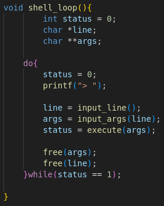
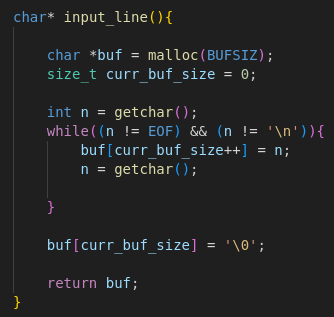
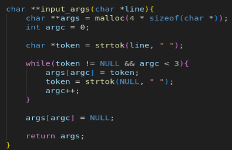
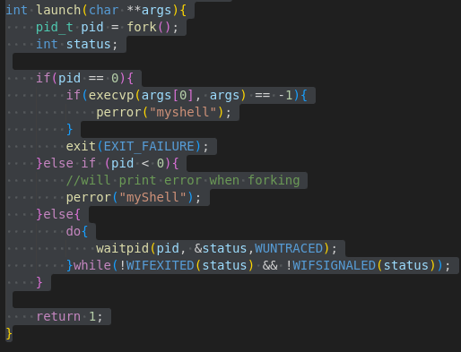
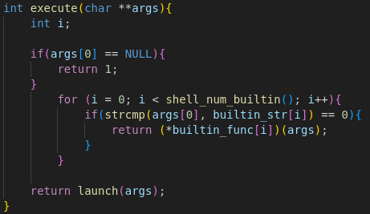

After reading the C bible (K&R) I was in search of a system level project that I could use to apply the skills I learnt from the bible. After reading a bunch of blogs I decided to attempt writing a custom shell. I needed some guidance on how to get started, because I had no clue how shells work, so I read Stephen Brennan’s blog on writing a shell in C.
Why did I decide on building a shell?
Building a shell (in C) allows you to practice pointers and system calls. It is also a good entry point to system level programming in my opinion.
Now let’s get into how I built it:
A shell has to read input, process it(use relevant command with its arguments), and then execute the command. So each of these steps need a method (or methods).
the first method you need is one that loops the shell input stage. For this I created a function called shell_loop, which is a do-while loop. I needed it to be a do-while loop, because I want the input function to run at least once before checking conditions (when you first run the shell). Shell_loop calls the functions responsible for 3 main functions of a shell (read, process and execute).

input_line is a function that reads the input from a user and saves it into a string called line. Inside the function, I defined a buffer, and allocated BUFSIZ bytes to it (the value of BUFSIZ will vary based on the OS you run this shell on). Then we use getchar to read a single character from stdin and store it into the buffer, I could have used gets to read the whole line but that’s cheating. After there are no more characters to be read, we add a string terminator to the buf then we return the pointer to buffer (REMEMBER TO FREE THE MEMORY OF BUF IN THE shell_loop).

Now we have the input from the user we can process the input. The function input_args takes in the input string and tokenizes it using spaces. After the tokenization the tokens are stored in an array called args and the function returns the pointer to the memory location of args.

The next part is the execute portion of the shell, this part is the most involved and fun. Now we have to think about how our shell will execute commands. We can have all the commands builtin but that robs the user of being able to download their programs and run them on the shell, and that’s not how shells work. When a user types in let’s say “cat helloWorld.txt” the shell executes another process within a process(the shell itself), but at the same time you need some builtin functions like cd, help, and exit because they are specific to the current running process(the shell) when you use cd, you need to change the dir of the current running process, likewise with exit. With help, you want to print the information directly specific to this program. More about the implementation of the builtin functions later. Now how do you run a process within a process?
To run a process within a process you need to use the system call called fork(). When you call fork() you get these two processes running at the same time the parent(the main one) and the child(the second that resulted from the fork). The parent gets a process ID(PID) and the child gets a PID of 0. While the 2 programs are running at the same time, they are still running the same code, to “replace” the child process with a program of your own you need to use the exec() system call. Particularly execvp() which takes a vector as the second argument and the first argument is the name of the executable/program you want to run and the system call execvp will look for it in the environment’s PATH. Now we have parent and the child running at the same time, but we have no guarantee which will “stop” running first, so in the parent process, you need to wait for the child process(if we don’t wait for it we might end up with a zombie process) and we can do that by using the system call waitpid() which takes in 3 arguments the first argument is of the process you want to wait for, the second should be a pointer to an int, where the return status of the child process will be stored and the last one is options, there are a bunch of them but I chose WUNTRACED because I wanted a report on how the child process stopped.

Now the execute function that is called in shell_loop first checks if the command the user is using is one of the builtin commands, if not, it calls launch(discussed above) to find the command in the environment’s PATH.
Then finally we have the implementation of the builtin commands. It’s all straightforward, the only thing to mention is that with the command “cd” we have to use the Linux system call chdir() to change directories.

This shell doesn’t handle redirection and piping yet, but will soon!!!!